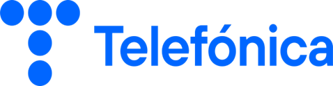
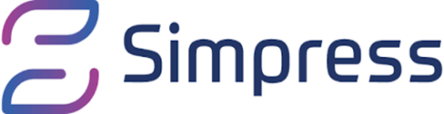

Transformamos el Field Service
en ventaja competitiva
Somos expertos en Oracle Field Service Cloud y Zinier.
Implementación, consultoría, soporte y soluciones propias
para optimizar cada operación de campo.




Respaldados por los líderes
globales del Field Service
Relaciones de partnership oficial certificado con las dos plataformas líderes del mercado global de Field Service Management.
Partner oficial de Oracle para la implementación y soporte de Oracle Field Service Cloud. Lideramos proyectos de transformación digital para empresas de utilities, telecomunicaciones e industria de servicios.
Partner certificado de Zinier, la plataforma de inteligencia artificial para Field Service Management de próxima generación. Implementamos flujos de trabajo inteligentes y automatizados.
Todo lo que necesitás
para tu Field Service
Desde la implementación inicial hasta el soporte continuo, cubrimos todo el ciclo de vida de tu operación de campo.
Implementación OFSC
Diseño, configuración y puesta en marcha de Oracle Field Service Cloud. Desde el análisis de procesos hasta el go-live y capacitación de equipos.
Ver másImplementación Zinier
Configuración de la plataforma Zinier adaptada a tus flujos de trabajo, integraciones con sistemas existentes y deployment en producción.
Ver másConsultoría FSM
Análisis de madurez operacional, diseño de procesos y estrategia de transformación digital para tu área de Field Service Management.
Ver másSoporte Post Go-Live
Servicio de soporte continuo con SLA garantizado, gestión de incidentes, mejoras evolutivas y acompañamiento técnico de primer nivel.
Ver másDesarrollo a Medida
Desarrollo de plugins, extensiones y soluciones personalizadas sobre las plataformas OFSC y Zinier para adaptar la herramienta a tu negocio.
Ver másIntegraciones
Conectamos OFSC y Zinier con tus sistemas ERP, CRM, GIS o de facturación mediante APIs, middleware y conectores especializados.
Ver másNo somos una consultora genérica
Nos especializamos exclusivamente en Field Service Management. Eso marca la diferencia.
FSMTool y Workflow Builder son aplicaciones propias que desarrollamos para potenciar Oracle Field Service Cloud. Ninguna otra consultora las tiene.
FSMTool · Workflow BuilderNo hacemos de todo. Nos dedicamos exclusivamente al Field Service Management. Esa especialización se traduce en resultados más rápidos y proyectos más exitosos.
Foco 100% FSMNuestros consultores están certificados en Oracle Field Service Cloud y Zinier. Implementamos con el conocimiento técnico más profundo del mercado.
Oracle Certified · Zinier Partner¿Querés conocer más sobre nuestra metodología y equipo?
Un proceso probado para
cada implementación
Cada proyecto sigue una metodología estructurada que garantiza resultados predecibles y de calidad.
¿Querés conocer cómo aplicamos esta metodología en tu empresa?
Nuestras soluciones propias
Herramientas desarrolladas internamente sobre las plataformas líderes, diseñadas para resolver los desafíos más comunes del Field Service.
Suite de herramientas avanzadas de administración y monitoreo para Oracle Field Service Cloud. Operaciones masivas, dashboards en tiempo real y automatización de procesos.
Constructor visual de flujos de trabajo para Oracle Field Service Cloud. Permite diseñar, testear y publicar workflows sin código, reduciendo el time-to-market de nuevos procesos.
¿Listo para optimizar tu
operación de campo?
Nuestro equipo de expertos está disponible para analizar tu situación actual y proponer la estrategia óptima para tu negocio.